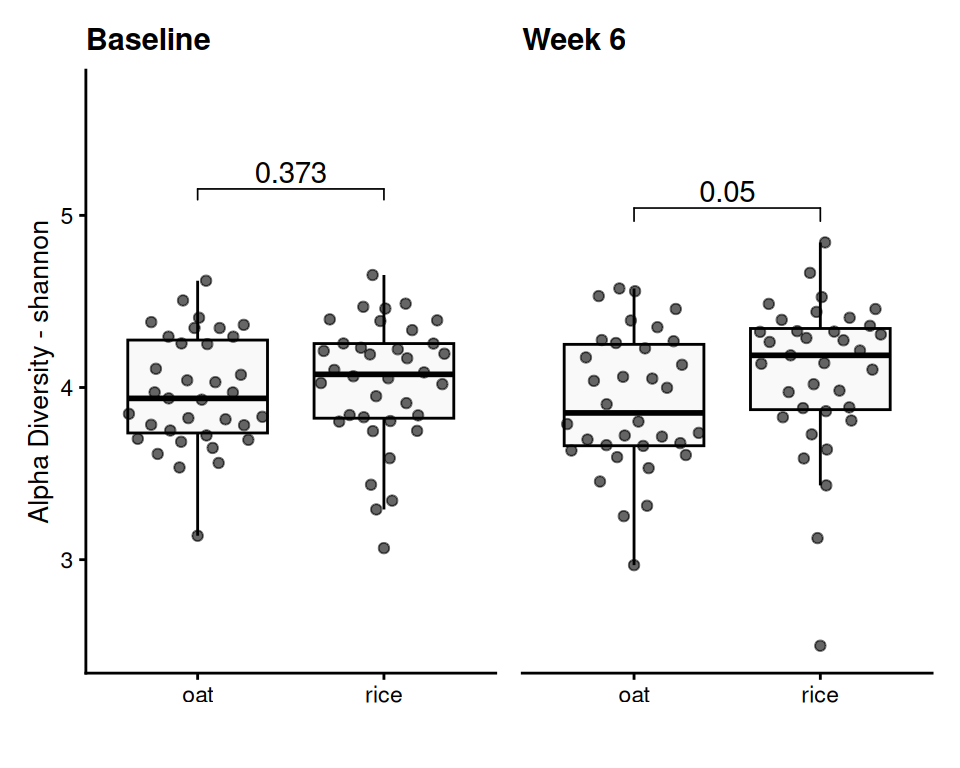
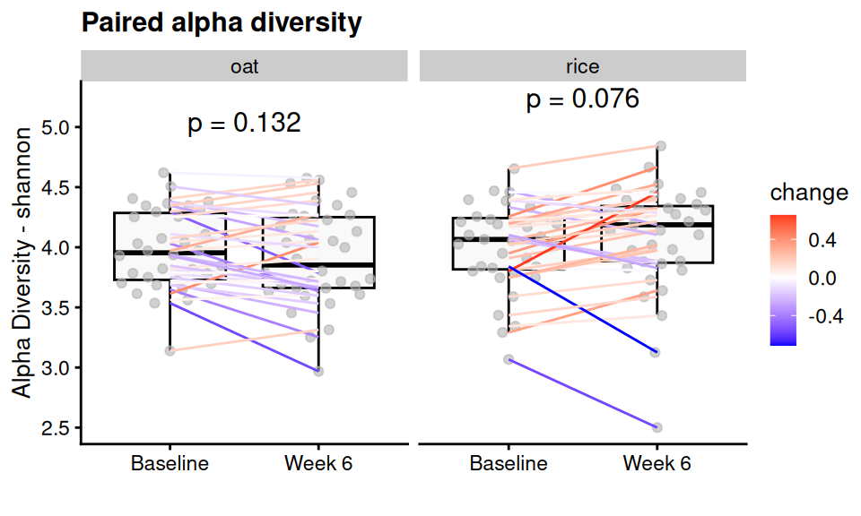
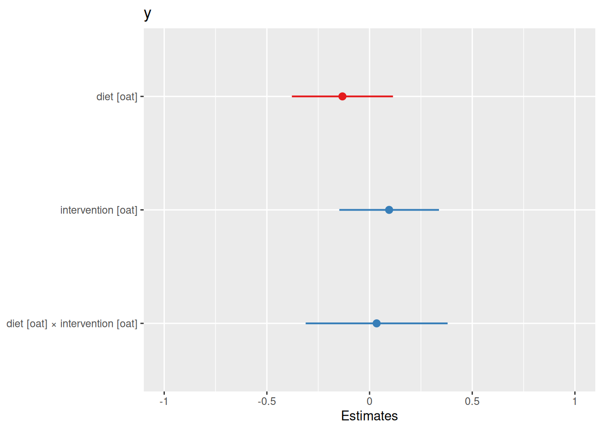
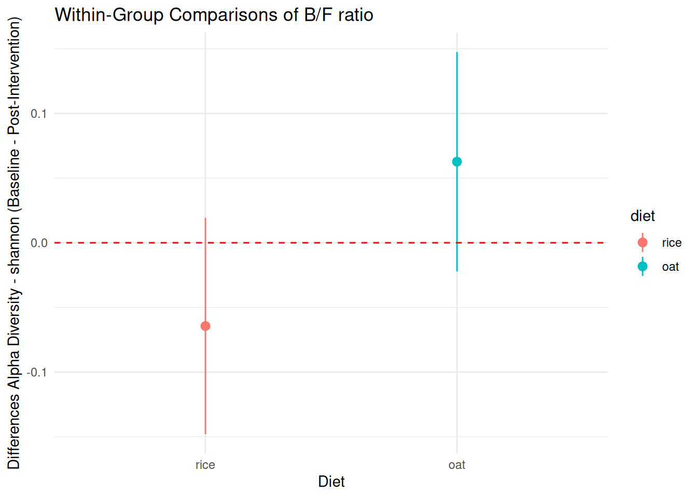
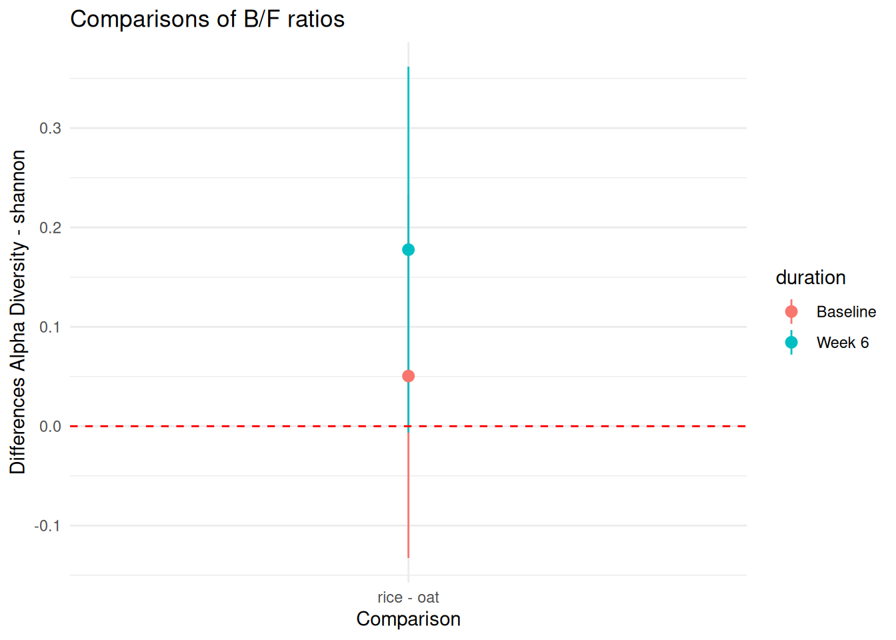

Alpha Diversity
1 Group-wise comparisons
- Index: shannon
- Group variable: diet
- Multiple testing correction: FDR
- Statistical test Wilcoxon
In the report, a suffix of 1~ Baseline and 2~ Week 6
1.1 Table of the top findings
1.1.1 Across-group
1.1.1.1 Before treatment
- Multiple testing correction: FDR
- Statistical test: Wilcoxon
1.1.1.2 After treatment
- Multiple testing correction: FDR
- Statistical test: Wilcoxon

1.1.2 Within-group
1.1.2.1 Paired treatment
- Multiple testing correction: FDR
- Statistical test: paired Wilcoxon
1.2 LMM
Research Question 1: Did the diet change the microbiota?
The interaction term (Treatment:Timepoint) tests whether the effect of time on Alpha diversity depends on the diet group.
Post-hoc analysis within each diet group identifies specific changes in Alpha diversity over time.
Research Question 2: Was the microbiota equal between the diet groups before and after diet?
The main effect of diet tests for differences in Alpha diversity between diet groups at baseline.
Post-hoc analysis across diet groups at each timepoint identifies specific differences between diets
Interpret the Results
- Main Effects:
diet: Tests for differences in microbiota between Diet A and Diet B at Baseline.
duration: Tests for changes in microbiota over time across both diets.
diet:duration: Tests whether the effect of Timepoint depends on the diet group.
- Random Effects:
- (1|id): Accounts for within-subject variability.
- Multiple testing correction: FDR
- Statistical test: paired Wilcoxon
- Formula used: ~ diet * timepoint + (1 | id)

| y | |||
|---|---|---|---|
| Predictors | Estimates | CI | p |
| (Intercept) | 4.02 | 3.90 – 4.15 | <0.001 |
| diet [oat] | -0.05 | -0.23 – 0.13 | 0.585 |
| duration [Week 6] | 0.06 | -0.02 – 0.15 | 0.127 |
| diet [oat] × duration [Week 6] |
-0.13 | -0.25 – -0.01 | 0.035 |
| Random Effects | |||
| σ2 | 0.03 | ||
| τ00 id | 0.12 | ||
| ICC | 0.80 | ||
| N id | 71 | ||
| Observations | 140 | ||
| Marginal R2 / Conditional R2 | 0.027 / 0.801 | ||
1.2.1 Post-Hoc Analysis
Within-Group Comparisons
| contrast | diet | estimate | SE | df | t.ratio | p.value |
|---|---|---|---|---|---|---|
| Baseline - Week 6 | rice | -0.0644195 | 0.0419236 | 67.36550 | -1.536591 | 0.1290773 |
| Baseline - Week 6 | oat | 0.0627278 | 0.0425341 | 67.37541 | 1.474763 | 0.1449340 |

Across-Group Comparisons
| diet | duration | emmean | SE | df | lower.CL | upper.CL |
|---|---|---|---|---|---|---|
| rice | Baseline | 4.023754 | 0.0646730 | 84.09045 | 3.895147 | 4.152361 |
| oat | Baseline | 3.973278 | 0.0655904 | 84.09045 | 3.842846 | 4.103709 |
| rice | Week 6 | 4.088173 | 0.0650155 | 85.45237 | 3.958915 | 4.217432 |
| oat | Week 6 | 3.910550 | 0.0659479 | 85.49222 | 3.779439 | 4.041661 |
| contrast | duration | estimate | SE | df | t.ratio | p.value |
|---|---|---|---|---|---|---|
| rice - oat | Baseline | 0.0504763 | 0.0921124 | 84.09045 | 0.5479863 | 0.5851531 |
| rice - oat | Week 6 | 0.1776236 | 0.0926074 | 85.47258 | 1.9180272 | 0.0584466 |

2 Data Summary
class: TreeSummarizedExperiment
dim: 1700 140
metadata(0):
assays(1): relabundance
rownames(1700): SGB4933 SGB4285 ... SGB15018 SGB4921
rowData names(9): kingdom phylum ... strain clade_name
colnames(140): AE1332 AE2332 ... VK1336 VK2336
colData names(17): sample id ... shannon group
reducedDimNames(0):
mainExpName: NULL
altExpNames(20): kingdom phylum ... KO metacyc
rowLinks: NULL
rowTree: NULL
colLinks: NULL
colTree: NULL